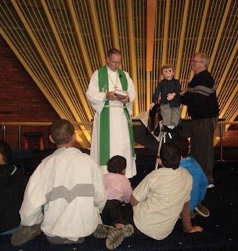

Story time
9/12/2010
{kind=link}

Arriving from New Zealand this past week was an excitement filled email from Dave Thomson. It had nothing to do with the earthquake that county has recently experienced. For Dave, however, there was another "earthshaking" experience. The week was personally significant to Dave because he had his first opportunity to participate in his minister's Sunday children's message. The minister provided the story, but invited Dave and "Dexter" to listen and ask questions.
Dave had spent three weeks preparing for his participation in the Sunday morning children's presentation during the worship service. In spite of that amount of preparation Dave says, "most of the prepared lines went out the window" once he stood in front of his audience (we've all been there, haven't we?), but still, all in all, the comments he received following the service were very favorable and encouraging.
I'm so thankful for those individuals who recognize budding talent and lend their support as was done for Dave on this Sunday. In my own early career it was the pastor of our church who encouraged my feeble early efforts and provided repeated opportunities for me to perform. Had he not done so, I seriously doubt I would have persued ventriloquism long term. I'm sure nearly every ventriloquist can look back to the early days of their career and see where some special person or persons provided key support which in one way or another was so vital.
Those dear folks who provide encouragement to others are one of God's greatest gifts to his people. I pray you are one of them.